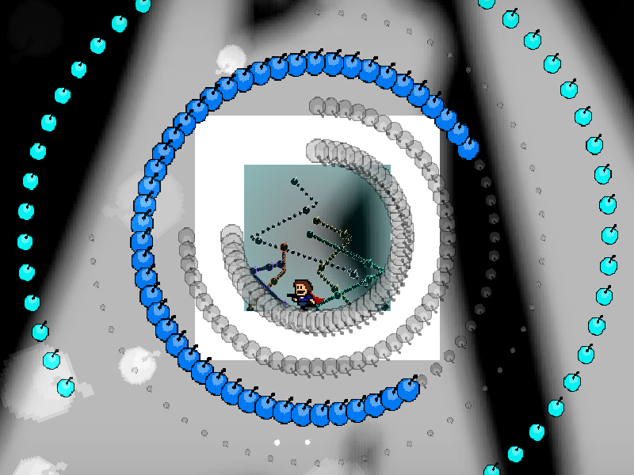
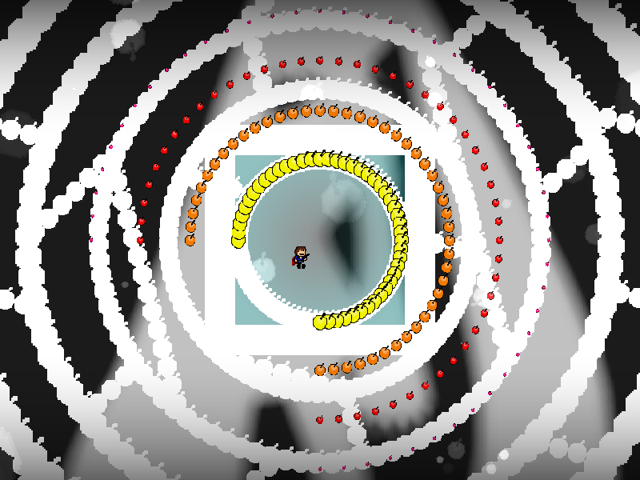

| creator | segment | label | jump |
|---|---|---|---|
| NN | 2:16.70~2:23.90 | R/Q/Q | double |
弾の形状（左右反転、上下反転）を題材とした反復型の弾幕です。
原理自体は10-1と同様ですが、円弧状弾幕に関して円弧に対する弾が占める部分の割合が75%に上昇しているという点において10-1との差異が存在します。
なお、4発目（2:22.20において折り返されるもの）については、折り返し後の形状に関して必ず下半分に空間が存在する形状をとります（fig.10-2.1）。
